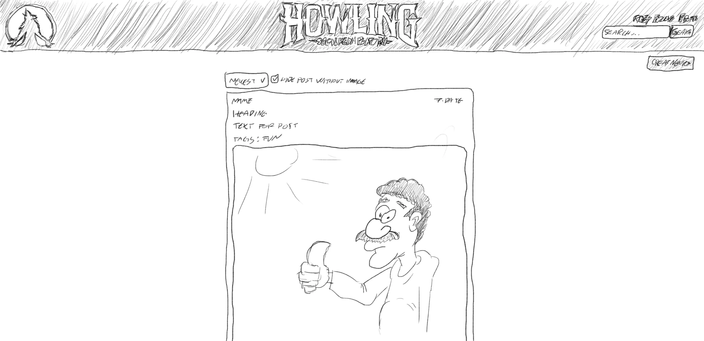
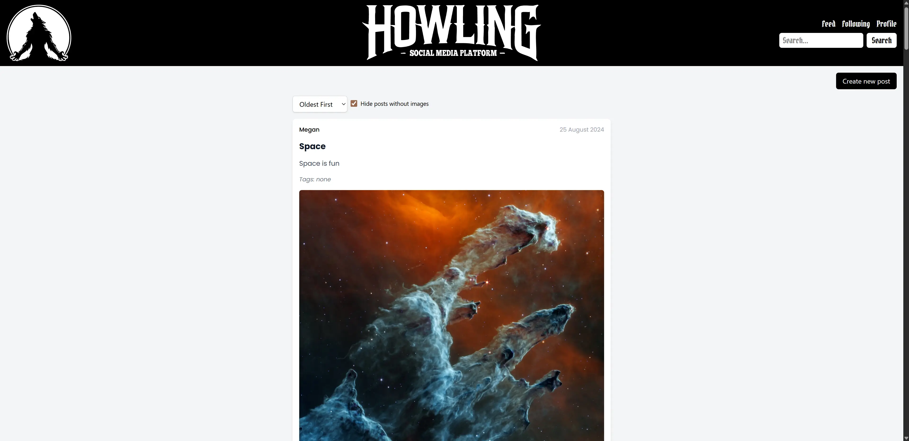

Howling
A Tailwind-built social feed client with auth, posting, filtering and profiles—styled as a clean, responsive Twitter parody.
Welcome to the portfolio of Runar Pettersen. From sketch to finish. Hover to reveal the finished look, or use the toggle (tap-friendly).
A Tailwind-built social feed client with auth, posting, filtering and profiles—styled as a clean, responsive Twitter parody.

A React eCommerce store with product listing, product pages, cart, and checkout success, built with routing and state management.
An auction marketplace app with listings, bids, profile features and admin tools, polished for a smoother UX and cleaner codebase.
My name is Runar Pettersen, and this is my portfolio, created for an assignment in Noroff’s Frontend Development programme. Here I showcase three of the projects from my studies, where I was also tasked with adding improvements to each of the three websites. My idea for this portfolio is to show the journey from sketch to finished product, as a symbol of the development over two years of studying at Noroff.
GitHub: github.com/RunarPettersen